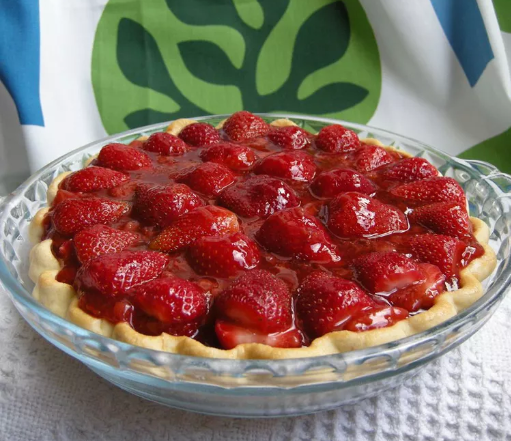

Torta de Morango

Torta de morango muito fácil de fazer.
Ingredientes
- 1 porção de morangos frescos, descascados
- 1 massa de torta (9 polegadas) , assada
- 1 xícara de açúcar branco
- 3 colheres de sopa de amido de milho
- 3/4 xícara de água
- 1/2 xícara de creme de leite fresco
Etapas
- Disponha 1/2 morango na casca da massa assada. Coloque os morangos restantes em uma panela média.
- Adicione açúcar aos morangos na panela; leve ao fogo médio e leve para ferver, mexendo sempre.
- Misture o amido de milho e a água em uma tigela pequena. Gradualmente, misture a mistura de amido de milho na mistura fervente de morango. Reduza o fogo e cozinhe a mistura até engrossar, cerca de 10 minutos, mexendo sempre.
- Despeje a mistura de morango cozida sobre as frutas vermelhas na casca da massa. Leve à geladeira até esfriar e firmar, pelo menos 3 horas.
- Antes de servir, bata o creme de leite em uma tigela média até formar picos moles. Sirva cada fatia de torta com um bocado de chantilly.
Voltar